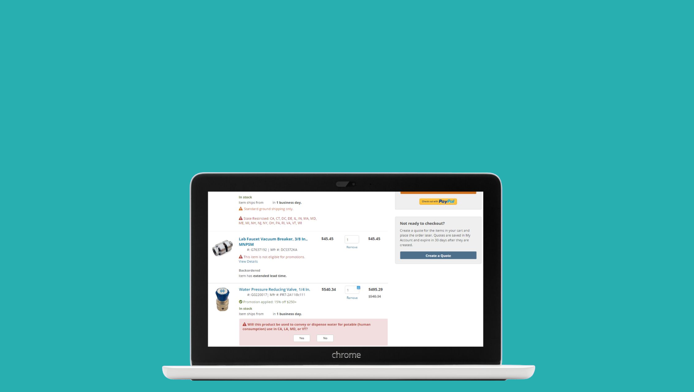
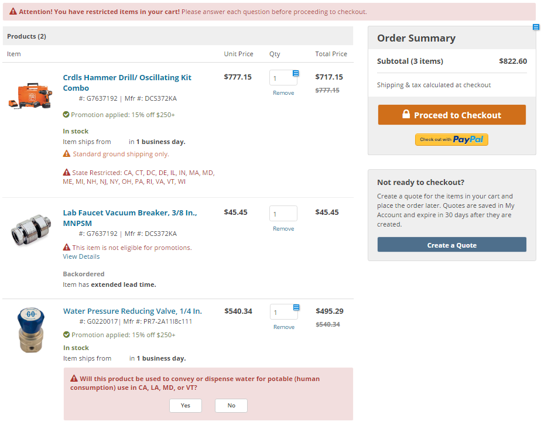

Streamlined purchase of restricted products
Project
There are certain types of products that are used to transport water, but are not safe for human consumption, usually because of whatever the product was made out of. These items are restricted. When selling one of these items, a retailer has to make it clear that the item cannot legally be used for human consumption (otherwise known as potable water).
On Zoro.com, if a customer attempted to purchase one of these items, they would have to fill out a form before the product could be added to the cart. After purchasing, the order would be flagged. A customer service agent (CSA) would then have to manually interact with the order multiple times along its lifecycle. Most of the orders got canceled because of some unforeseen failure, ex. the form address didn't match the shipping address. While the amount of orders were small (~10,000/year), it still amounted to potentially hours of manual labor and frustrated customers.
- My role: Lead UX designer
- Team: Legal team, customer service team
Objective
- Reduce customer frustration with canceled orders
- Minimize the amount of manual processes applied to the order
Work
I first heard of this problem while sitting with one of the CSAs during a ride along. She explained that this customer was furious because they had ordered this spigot two weeks ago and he still hadn't gotten a notification. After looking at the website, I understood how the customer might have been led to make a mistake.

I mapped out the current flow from the customer side and from the CSA side, to determine the major pain points. The customer jumped through several hoops on the product page, including digitally signing a poorly worded agreement. The CSA then had to manually check every single order and may even call the customer.

After researching competitors and the parent company, I came up with a draft flow and design. I reviewed it with the legal team to make sure that the company was still protected against lawsuits. They approved the flow.
End result
- Clarified the purchase for the customer
- Eliminated manual processes
- Maintained legal protection for the company
Reflection
Unfortunately, this project never got prioritized for development. There were many projects vying for resources and, because these restricted products made up such a low number of overall purchases, there just wasn't a demand to fix the process.